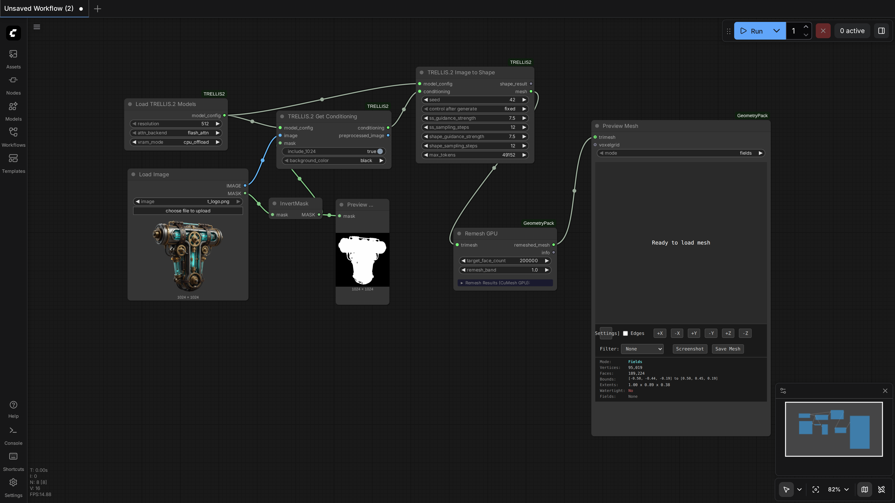
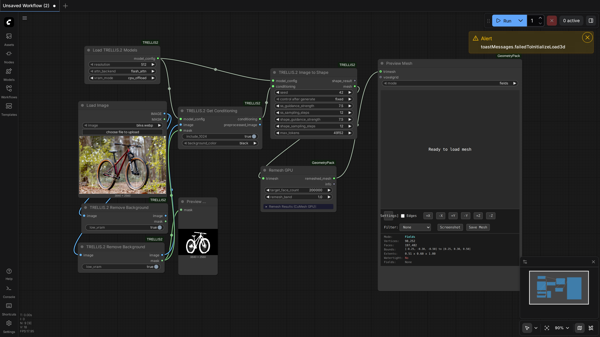

100.0%
3 passed
3/3 tests
Workflows

geometry_only
pass

geometry_texture
pass

remove_background
pass
Downloaded Models
42 files · 15.5 GBmodels/birefnet/
models--ZhengPeng7--BiRefNet/blobs/9ab37426bf4de0567af6b5d21b16151357149139362e6e8992021b8ce356a154423.9 MB
models--ZhengPeng7--BiRefNet/blobs/8dea801e2b56facb8486ba351e6f91c3e664eb6d89.7 KB
models--ZhengPeng7--BiRefNet/blobs/06d8fa9d7f2f4c6f1cf0dc6e7bfd194153176a42405.0 B
models--ZhengPeng7--BiRefNet/blobs/37c8ac58bec2f52dac34204978a7b61b69e3da76298.0 B
models/dinov3/
model.safetensors1.1 GB
.cache/huggingface/download/model.safetensors.metadata125.0 B
.cache/huggingface/.gitignore1.0 B
models/trellis2/
ckpts/slat_flow_imgshape2tex_dit_1_3B_512_bf16.safetensors2.4 GB
ckpts/slat_flow_imgshape2tex_dit_1_3B_1024_bf16.safetensors2.4 GB
ckpts/slat_flow_img2shape_dit_1_3B_1024_bf16.safetensors2.4 GB
ckpts/slat_flow_img2shape_dit_1_3B_512_bf16.safetensors2.4 GB
ckpts/ss_flow_img_dit_1_3B_64_bf16.safetensors2.4 GB
ckpts/shape_dec_next_dc_f16c32_fp16.safetensors904.6 MB
ckpts/tex_dec_next_dc_f16c32_fp16.safetensors904.5 MB
ckpts/ss_dec_conv3d_16l8_fp16.safetensors140.8 MB
pipeline.json4.1 KB
ckpts/tex_dec_next_dc_f16c32_fp16.json705.0 B
ckpts/shape_dec_next_dc_f16c32_fp16.json678.0 B
ckpts/ss_flow_img_dit_1_3B_64_bf16.json467.0 B
ckpts/slat_flow_img2shape_dit_1_3B_512_bf16.json458.0 B
ckpts/slat_flow_imgshape2tex_dit_1_3B_512_bf16.json458.0 B
ckpts/slat_flow_imgshape2tex_dit_1_3B_1024_bf16.json458.0 B
ckpts/slat_flow_img2shape_dit_1_3B_1024_bf16.json458.0 B
ckpts/ss_dec_conv3d_16l8_fp16.json245.0 B
.cache/huggingface/download/ckpts/slat_flow_img2shape_dit_1_3B_512_bf16.safetensors.metadata125.0 B
.cache/huggingface/download/ckpts/ss_dec_conv3d_16l8_fp16.safetensors.metadata125.0 B
.cache/huggingface/download/ckpts/ss_flow_img_dit_1_3B_64_bf16.safetensors.metadata125.0 B
.cache/huggingface/download/ckpts/tex_dec_next_dc_f16c32_fp16.safetensors.metadata125.0 B
.cache/huggingface/download/ckpts/slat_flow_img2shape_dit_1_3B_1024_bf16.safetensors.metadata124.0 B
.cache/huggingface/download/ckpts/slat_flow_imgshape2tex_dit_1_3B_1024_bf16.safetensors.metadata124.0 B
.cache/huggingface/download/ckpts/slat_flow_imgshape2tex_dit_1_3B_512_bf16.safetensors.metadata124.0 B
.cache/huggingface/download/ckpts/shape_dec_next_dc_f16c32_fp16.safetensors.metadata124.0 B
.cache/huggingface/download/ckpts/slat_flow_img2shape_dit_1_3B_512_bf16.json.metadata101.0 B
.cache/huggingface/download/ckpts/shape_dec_next_dc_f16c32_fp16.json.metadata101.0 B
.cache/huggingface/download/ckpts/tex_dec_next_dc_f16c32_fp16.json.metadata101.0 B
.cache/huggingface/download/ckpts/slat_flow_imgshape2tex_dit_1_3B_1024_bf16.json.metadata101.0 B
.cache/huggingface/download/ckpts/ss_dec_conv3d_16l8_fp16.json.metadata101.0 B
.cache/huggingface/download/pipeline.json.metadata100.0 B
.cache/huggingface/download/ckpts/slat_flow_img2shape_dit_1_3B_1024_bf16.json.metadata100.0 B
.cache/huggingface/download/ckpts/slat_flow_imgshape2tex_dit_1_3B_512_bf16.json.metadata100.0 B
.cache/huggingface/download/ckpts/ss_flow_img_dit_1_3B_64_bf16.json.metadata99.0 B
.cache/huggingface/.gitignore1.0 B